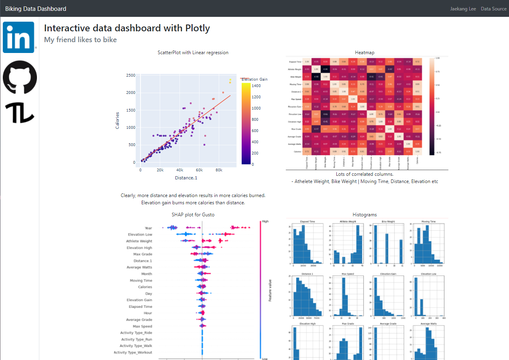
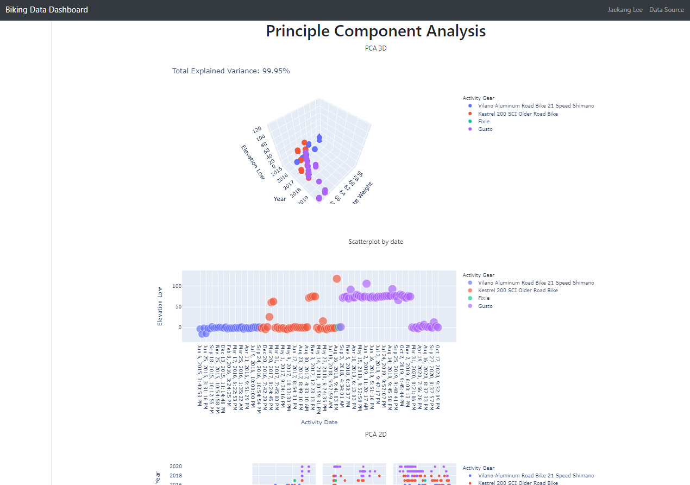
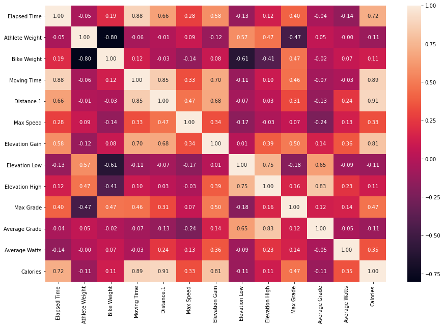
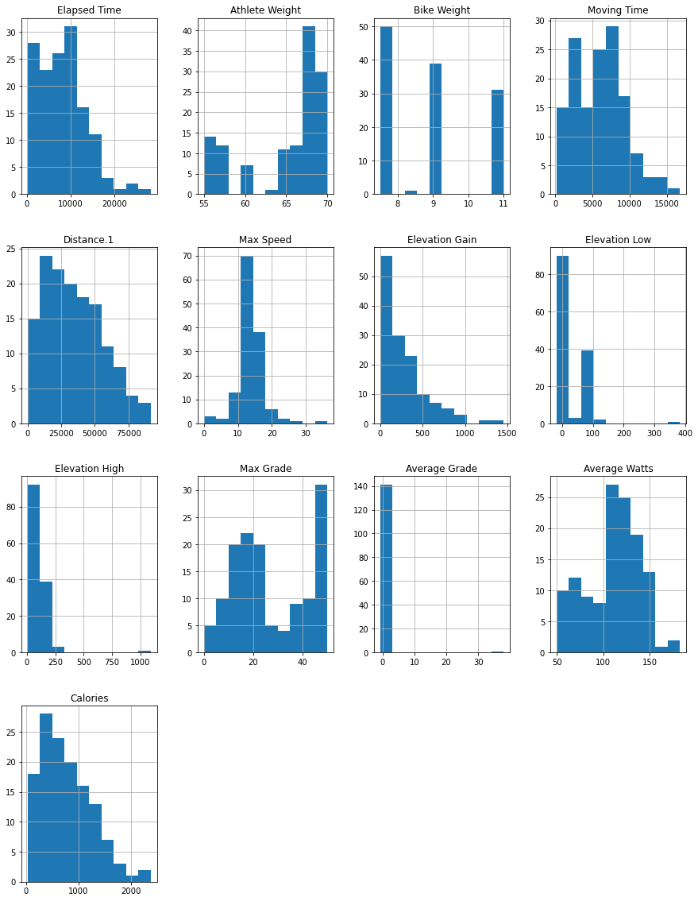
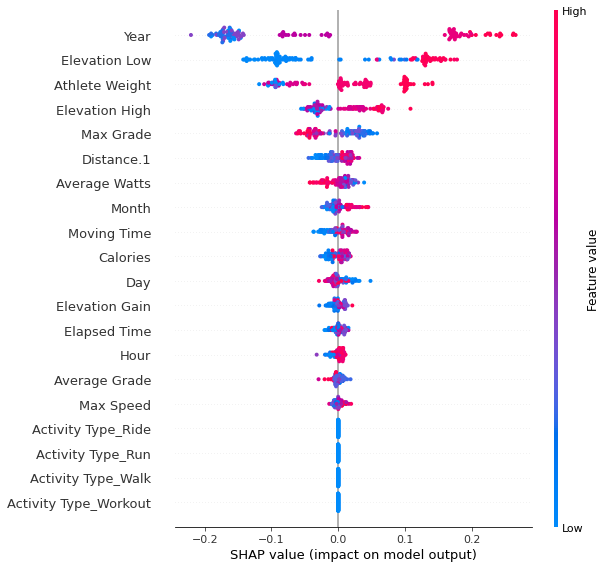
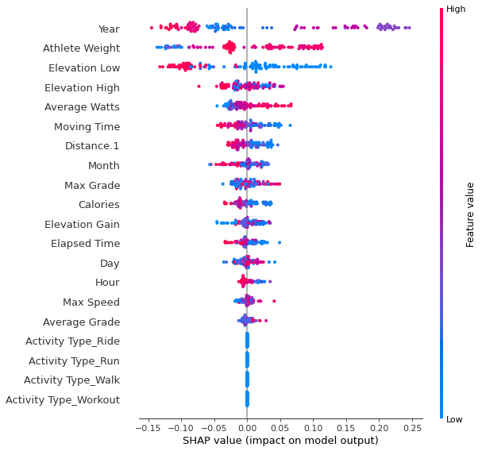
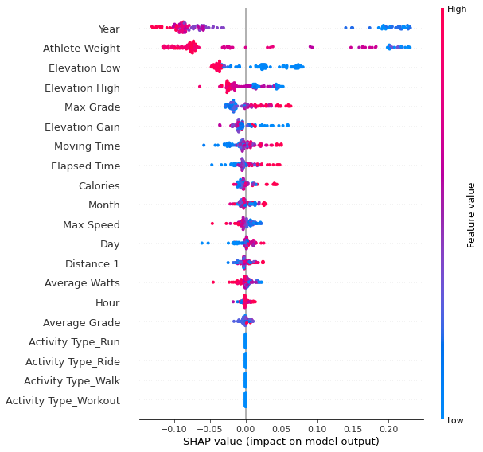
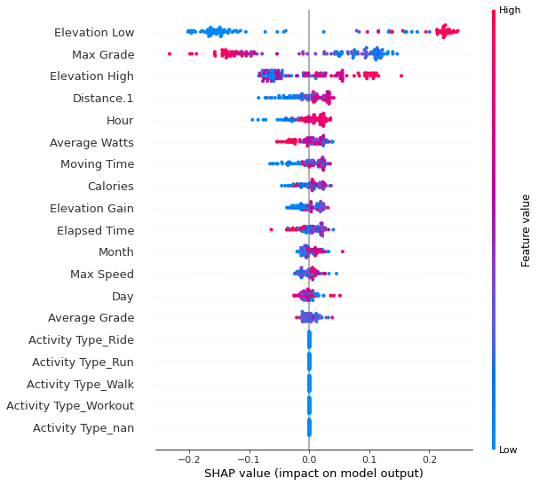
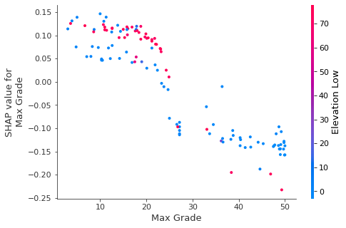

My friend likes to bike 🚴
Building interactive webapp with Python, Bootstrap and Flask

WEB-APP HERE
Note that the web-app takes about a min to load! # GIT REPOSITORY HERE
This is just codes I used on the notebook to understand and clean the data. The data comes from my friend who likes to bike.
number of rows: 142| Activity ID | Activity Date | Activity Name | Activity Type | Activity Description | Elapsed Time | Distance | Relative Effort | Commute | Activity Gear | ... | Gear | Precipitation Probability | Precipitation Type | Cloud Cover | Weather Visibility | UV Index | Weather Ozone | translation missing: en-US.lib.export.portability_exporter.activities.horton_values.jump_count | translation missing: en-US.lib.export.portability_exporter.activities.horton_values.total_grit | translation missing: en-US.lib.export.portability_exporter.activities.horton_values.avg_flow | |
|---|---|---|---|---|---|---|---|---|---|---|---|---|---|---|---|---|---|---|---|---|---|
| 47 | 723876967 | Sep 24, 2016, 10:54:54 PM | Afternoon Ride | Ride | NaN | 12735 | 29.55 | NaN | False | Vilano Aluminum Road Bike 21 Speed Shimano | ... | NaN | NaN | NaN | NaN | NaN | NaN | NaN | NaN | NaN | NaN |
1 rows × 77 columns
Index(['Activity ID', 'Activity Date', 'Activity Name', 'Activity Type',
'Elapsed Time', 'Distance', 'Commute', 'Activity Gear', 'Filename',
'Athlete Weight', 'Bike Weight', 'Elapsed Time.1', 'Moving Time',
'Distance.1', 'Max Speed', 'Elevation Gain', 'Elevation Low',
'Elevation High', 'Max Grade', 'Average Grade', 'Average Watts',
'Calories', 'Commute.1', 'Bike'],
dtype='object')Going to remove discard = [‘Activity Name’, ‘Activity ID’, ‘Commute’, ‘Filename’, ‘Commute.1’,‘Distance’, ‘Elapsed Time.1’, ‘Bike’]
Because not information or repetitive.
| Activity Date | Activity Type | Elapsed Time | Activity Gear | Athlete Weight | Bike Weight | Moving Time | Distance.1 | Max Speed | Elevation Gain | Elevation Low | Elevation High | Max Grade | Average Grade | Average Watts | Calories | |
|---|---|---|---|---|---|---|---|---|---|---|---|---|---|---|---|---|
| 47 | Sep 24, 2016, 10:54:54 PM | Ride | 12735 | Vilano Aluminum Road Bike 21 Speed Shimano | 63.502899 | 11.0 | 7946.0 | 29549.900391 | 12.3 | 11.1737 | 1.2 | 13.2 | 38.299999 | -0.002369 | 53.709999 | 475.859314 |
| Elapsed Time | Athlete Weight | Bike Weight | Moving Time | Distance.1 | Max Speed | Elevation Gain | Elevation Low | Elevation High | Max Grade | Average Grade | Average Watts | Calories | |
|---|---|---|---|---|---|---|---|---|---|---|---|---|---|
| count | 142.000000 | 128.000000 | 121.000000 | 142.000000 | 142.000000 | 136.000000 | 137.000000 | 135.000000 | 135.000000 | 136.000000 | 142.000000 | 126.000000 | 132.000000 |
| mean | 8307.028169 | 65.011994 | 8.886777 | 5964.485915 | 34740.822462 | 13.735294 | 262.614366 | 26.635556 | 95.854814 | 27.179412 | 0.271421 | 111.032301 | 764.836008 |
| std | 5371.122774 | 5.263799 | 1.400711 | 3368.764442 | 21521.125565 | 3.903418 | 270.558590 | 47.756425 | 103.870238 | 15.398105 | 3.187175 | 28.786978 | 489.682759 |
| min | 204.000000 | 55.000000 | 7.500000 | 182.000000 | 0.000000 | 0.000000 | 0.000000 | -18.000000 | 6.900000 | 0.000000 | -0.752807 | 49.716900 | 26.208254 |
| 25% | 3414.500000 | 60.000000 | 7.500000 | 2949.000000 | 17527.250488 | 11.800000 | 62.490898 | -1.000000 | 21.850000 | 14.350000 | -0.003579 | 91.731985 | 383.654442 |
| 50% | 8070.500000 | 68.000000 | 9.000000 | 6047.500000 | 31560.699219 | 13.700000 | 166.636993 | 0.900000 | 101.099998 | 22.300000 | 0.000000 | 114.522282 | 673.522827 |
| 75% | 11301.000000 | 68.000000 | 11.000000 | 7957.250000 | 50011.325195 | 15.300000 | 358.088989 | 72.400002 | 125.799999 | 42.899999 | 0.010629 | 130.717503 | 1066.323883 |
| max | 28317.000000 | 70.000000 | 11.000000 | 16708.000000 | 91705.296875 | 36.299999 | 1455.640015 | 382.299988 | 1092.099976 | 50.000000 | 37.947071 | 182.307999 | 2375.330322 |

Interesting Correlations: - Elevation Low,High with Athelete Weight, bike weight - Calories and Moving Time and Distance.1 and Elevation Gain - Elevation High, Low and Average Grade - Elevation Gain with Elapsed time, Moving Time, Distance
UserWarning: To output multiple subplots, the figure containing the passed axes is being cleared
df.hist(ax = plt.figure(figsize = (15,20)).gca());
Categorical Columns
| Activity Date | Activity Type | Activity Gear | |
|---|---|---|---|
| 47 | Sep 24, 2016, 10:54:54 PM | Ride | Vilano Aluminum Road Bike 21 Speed Shimano |
| 8 | May 23, 2015, 10:26:06 PM | Ride | NaN |
| 94 | Sep 29, 2018, 4:19:38 PM | Ride | Gusto |
| 55 | Mar 22, 2017, 3:44:50 PM | Ride | Kestrel 200 SCI Older Road Bike |
| 40 | Apr 16, 2016, 5:57:42 PM | Ride | Vilano Aluminum Road Bike 21 Speed Shimano |
| ... | ... | ... | ... |
| 30 | Mar 16, 2016, 6:25:36 PM | Ride | Vilano Aluminum Road Bike 21 Speed Shimano |
| 66 | Jun 23, 2017, 11:25:10 PM | Ride | Kestrel 200 SCI Older Road Bike |
| 62 | May 9, 2017, 10:33:30 PM | Ride | Kestrel 200 SCI Older Road Bike |
| 91 | Aug 22, 2018, 9:34:35 PM | Ride | Gusto |
| 35 | Mar 23, 2016, 5:35:32 AM | Run | NaN |
142 rows × 3 columns
Lets clean these up 🧹
| Activity Type | Elapsed Time | Activity Gear | Athlete Weight | Bike Weight | Moving Time | Distance.1 | Max Speed | Elevation Gain | Elevation Low | Elevation High | Max Grade | Average Grade | Average Watts | Calories | Year | Month | Day | Hour | |
|---|---|---|---|---|---|---|---|---|---|---|---|---|---|---|---|---|---|---|---|
| 47 | Ride | 12735 | Vilano Aluminum Road Bike 21 Speed Shimano | 63.502899 | 11.0 | 7946.0 | 29549.900391 | 12.3 | 11.173700 | 1.2 | 13.200000 | 38.299999 | -0.002369 | 53.709999 | 475.859314 | 2016 | 9 | 24 | 22 |
| 8 | Ride | 11734 | NaN | 56.699001 | NaN | 10057.0 | 59956.300781 | 14.6 | 825.666992 | -2.4 | 101.099998 | 46.500000 | 0.079558 | 130.302002 | 1461.148682 | 2015 | 5 | 23 | 22 |
| 94 | Ride | 4696 | Gusto | 68.000000 | 7.5 | 4127.0 | 27227.500000 | 14.0 | 158.414581 | 75.0 | 158.199997 | 11.000000 | 0.235424 | 109.483162 | 580.913513 | 2018 | 9 | 29 | 16 |
Unique Activity Gear values: ['Gusto' 'Kestrel 200 SCI Older Road Bike' nan
'Vilano Aluminum Road Bike 21 Speed Shimano' 'Fixie']
Unique Activity Gear values: ['Ride' 'Hike' 'Run' 'Workout' 'Walk']| Elapsed Time | Activity Gear | Athlete Weight | Bike Weight | Moving Time | Distance.1 | Max Speed | Elevation Gain | Elevation Low | Elevation High | ... | Calories | Year | Month | Day | Hour | Activity Type_Ride | Activity Type_Run | Activity Type_Walk | Activity Type_Workout | Activity Type_nan | |
|---|---|---|---|---|---|---|---|---|---|---|---|---|---|---|---|---|---|---|---|---|---|
| 47 | 12735 | Vilano Aluminum Road Bike 21 Speed Shimano | 63.502899 | 11.0 | 7946.0 | 29549.900391 | 12.3 | 11.173700 | 1.2 | 13.200000 | ... | 475.859314 | 2016 | 9 | 24 | 22 | 1 | 0 | 0 | 0 | 0 |
| 8 | 11734 | NaN | 56.699001 | NaN | 10057.0 | 59956.300781 | 14.6 | 825.666992 | -2.4 | 101.099998 | ... | 1461.148682 | 2015 | 5 | 23 | 22 | 1 | 0 | 0 | 0 | 0 |
| 94 | 4696 | Gusto | 68.000000 | 7.5 | 4127.0 | 27227.500000 | 14.0 | 158.414581 | 75.0 | 158.199997 | ... | 580.913513 | 2018 | 9 | 29 | 16 | 1 | 0 | 0 | 0 | 0 |
3 rows × 23 columns
Null Values
['Activity Gear',
'Athlete Weight',
'Bike Weight',
'Max Speed',
'Elevation Gain',
'Elevation Low',
'Elevation High',
'Max Grade',
'Average Watts',
'Calories']Based on their histogram, it seem like a good idea to
- Imputation on median: [Athlete Weight, Bike Weight, Elevation Low, Elevation High]
- Imputation on mean: [Elevation Gain, Average Watts, Calories, Max Speed, Max Grade]
| Elevation Gain | Average Watts | Calories | Max Speed | Max Grade | Elapsed Time | Activity Gear | Moving Time | Distance.1 | Average Grade | ... | Hour | Activity Type_Ride | Activity Type_Run | Activity Type_Walk | Activity Type_Workout | Activity Type_nan | Athlete Weight | Bike Weight | Elevation Low | Elevation High | |
|---|---|---|---|---|---|---|---|---|---|---|---|---|---|---|---|---|---|---|---|---|---|
| 8 | 825.666992 | 130.302002 | 1461.148682 | 14.600000 | 46.500000 | 11734 | NaN | 10057.0 | 59956.300781 | 0.079558 | ... | 22 | 1 | 0 | 0 | 0 | 0 | 56.699001 | 9.0 | -2.4 | 101.099998 |
| 28 | 41.823601 | 128.156006 | 1058.558350 | 19.200001 | 24.700001 | 8448 | Vilano Aluminum Road Bike 21 Speed Shimano | 7408.0 | 53329.601562 | -0.015939 | ... | 15 | 1 | 0 | 0 | 0 | 0 | 60.000000 | 11.0 | -1.0 | 42.200001 |
2 rows × 23 columns
| Elapsed Time | Activity Gear | Athlete Weight | Bike Weight | Moving Time | Distance.1 | Max Speed | Elevation Gain | Elevation Low | Elevation High | ... | Calories | Year | Month | Day | Hour | Activity Type_Ride | Activity Type_Run | Activity Type_Walk | Activity Type_Workout | Activity Type_nan | |
|---|---|---|---|---|---|---|---|---|---|---|---|---|---|---|---|---|---|---|---|---|---|
| 101 | 11327 | Gusto | 68.000000 | 7.5 | 7993.0 | 54209.500000 | 11.5 | 240.664948 | 74.800003 | 113.900002 | ... | 975.611206 | 2019 | 5 | 15 | 21 | 1 | 0 | 0 | 0 | 0 |
| 44 | 5335 | Vilano Aluminum Road Bike 21 Speed Shimano | 67.131599 | 11.0 | 5038.0 | 38688.300781 | 11.8 | 24.196800 | 0.000000 | 13.900000 | ... | 770.871704 | 2016 | 8 | 29 | 17 | 1 | 0 | 0 | 0 | 0 |
2 rows × 23 columns
Linear Regression
LinearRegression(normalize=True)test r2: 0.6550060428615112
train r2: 0.9398003894033616Random Forests
RandomForestClassifier(max_leaf_nodes=32, n_estimators=2000, n_jobs=-1)test accuracy: 0.8421052631578947{0: 'Fixie', 2: 'Kestrel 200 SCI Older Road Bike', 3: 'Vilano Aluminum Road Bike 21 Speed Shimano', 1: 'Gusto'}39


Make it harder for computer to guess
RandomForestClassifier(max_leaf_nodes=32, n_estimators=2000, n_jobs=-1)test accuracy: 0.5263157894736842

What the heck makes Elevation Low a good guessing tool? Maybe my friend liked more mountains with certain bikes